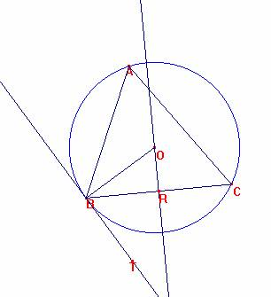
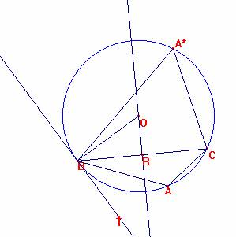

Para el aula
Problema 278
Dado el triángulo ABC, construyamos su circunferencia circunscrita.
Tracemos la recta tangente AT a la circunferencia por el punto A.
Demostrar que <ABC = <CAT, o <ABC + <CAT=180.
Solución del director.

Sea O el centro de la circunferencia circunscrita al triángulo.
Construyamos el triángulo ORB con OR perpendicular a BC y OB radio que es perpendicular a BT.
El triángulo OBC es isósceles y al ser ángulo central, <BOC=2<BAC, por lo que <BOR=<BAC, al ser OR la mediatriz bisectriz y mediana en el isósceles.
Así, es <CBT=<OBT-<OBR=90-OBR=<ORB-<OBR=<BOR=<BAC, cqd
En el caso de que el vértice A estuviese en el mismo semiplano que T respecto a la recta BC.

Tomemos A* en la circunferencia sobre el otro semiplano.
Es: <BAC+<CBT=<BAC+<BA*C=180 por ser concíclicos, cqd
Ricardo Barroso Campos
Didáctica de las Matemáticas
Universidad de Sevilla.